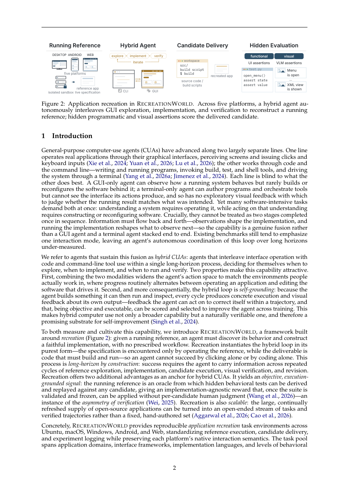

#1
★ 8/10
RecreationWorld: Scalable and Verifiable Environments for Hybrid Computer-Use Agents
RecreationWorld: Scalable and Verifiable Environments for Hybrid Computer-Use Agents

图 Figure · Page 2 of paper
🎯 （AI 中文深度分析暂不可用：Anthropic API 额度不足。英文栏为论文原文摘要，下方链接均可正常访问。）
Computer-use agents (CUAs) have advanced along two separate lines: graphical interaction and software development through code and the command line
| 维度 | 中文 | English |
|---|---|---|
| ❓ 待解决 的问题 |
（AI 中文深度分析暂不可用：Anthropic API 额度不足。英文栏为论文原文摘要，下方链接均可正常访问。） | Computer-use agents (CUAs) have advanced along two separate lines: graphical interaction and software development through code and the command line. Real digital work requires both, interleaved rather than stacked end to end. We study hybrid CUAs that autonomously decide when to explore an interface, implement software, and run and visually verify their artifacts. We introduce RecreationWorld, a five-platform framework built around recreation: given a running reference, an agent must discover its behavior and build a faithful implementation with no prescribed workflow. RecreationWorld provides reproducible environments on Ubuntu, macOS, Windows, Android, and Web, plus a unified harness with native GUI control and coding tools. The running reference serves as an oracle for hidden behavioral tests, providing execution-grounded rewards. We scale trajectory generation with high-quality open-source applications. Models trained on these trajectories improve across five out-of-distribution coding and hybrid computer-use benchmarks and more frequently verify their rendered outputs, providing evidence of transfer beyond recreation. For held-out evaluation, we introduce RecreationBench, comprising 250 diverse tasks across domains and platforms. Reference-grounded programmatic and visual assertions cover action-conditioned outcomes at multiple interaction depths; each is validated on the reference and by human reviewers before the suite is frozen for automatic scoring. GPT-6 Astra leads at 58.1% overall, but passes all programmatic tests on just 2.8% of tasks. Agents reproduce static interface structure more reliably than interactions and computed outputs, while generated applications remain smaller and more monolithic than their references. We release the benchmark, environments, and test suites. |
| 💡 解决 的亮点 |
（AI 中文深度分析暂不可用：Anthropic API 额度不足。英文栏为论文原文摘要，下方链接均可正常访问。） | See the paper’s original abstract in the "Problem / 背景" row above. |
| 🧪 实验 内容 |
（AI 中文深度分析暂不可用：Anthropic API 额度不足。英文栏为论文原文摘要，下方链接均可正常访问。） | See the paper’s original abstract in the "Problem / 背景" row above. |
| 📊 实验 结果 |
（AI 中文深度分析暂不可用：Anthropic API 额度不足。英文栏为论文原文摘要，下方链接均可正常访问。） | See the paper’s original abstract in the "Problem / 背景" row above. |
| 🏁 结论 | （AI 中文深度分析暂不可用：Anthropic API 额度不足。英文栏为论文原文摘要，下方链接均可正常访问。） | See the paper’s original abstract in the "Problem / 背景" row above. |
| 🔗 论文 链接 |
arXiv: 2609.22000v1 · 📥 PDF | |
⚙️ Method · 方法详解
（AI 中文深度分析暂不可用：Anthropic API 额度不足。英文栏为论文原文摘要，下方链接均可正常访问。）
See the paper’s original abstract in the "Problem / 背景" row above.
🌟 Why It Matters · 为什么重要
（AI 中文深度分析暂不可用：Anthropic API 额度不足。英文栏为论文原文摘要，下方链接均可正常访问。）
See the paper’s original abstract in the "Problem / 背景" row above.